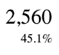

Appendix E. Statistics
LORD DIMWIT FLATHEAD: "It must have two hundred thousand rooms, four million takeable objects, and understand a vocabulary of every single word ever spoken in every language ever invented."
The New Zork Times (Winter 1984)
[Note: the information below has not been updated since the 20th June 1997 revision of this document.]
To give some idea of the sizes found in typical story files, here are a few statistics, mostly gathered by Paul David Doherty, whose "Infocom fact sheet" file is the definitive reference.
(i) Length
The shortest files are those dating from the time of the 'Zork' trilogy, at about 85K; middle-period Version 3 games are typically 105K, and only the latest use the full memory map. In Versions 4 and 5, only 'Trinity', 'A Mind Forever Voyaging' and 'Beyond Zork' use the full 256K. 'Border Zone' and 'Sherlock', for instance, are about 180K. (The author's short story 'Balances' is about 50K, an edition of 'Adventure' takes 80K, and 'Curses' takes 256K (it's padded out to the maximum size with background information; the actual game comprises only about 245K). Under Inform, the library occupies about 35K regardless of the size of game.)
(ii) Code size
'Zork I' uses only about 5500 opcodes, but the number rises steeply with later games; 'Hollywood Hijinx' has 10355 and, e.g. 'Moonmist' has 15900 (both these being Version 3). Against this, 'A Mind Forever Voyaging' has only 18700, and only 'Trinity' and 'Beyond Zork' reach 32000 or so. (Inform games are more efficiently compiled and make better use of common code -- the library -- so perform much better here: the old Version 3, release 10 of 'Curses' (128K long, and a larger game than any Infocom Version 3 game) has only 6720 opcodes.)
(iii) Objects and rooms
This varies greatly with the style of game. 'Zork I' has 110 rooms and 60 takeable objects, but several quite complex games have as few as 30 rooms (the mysteries, or 'Hitch-hikers'). The average for Version 3 games is 69 rooms, 39 takeable objects.
'A Mind Forever Voyaging' contains many rooms (178) but few objects (30). 'Trinity', a more typical style of game, contains 134 rooms and 49 objects: the Version 5 'Curses' has a few more of each. Of the Version 6 games, only 'Zork Zero' scores highly here, with 215 rooms and 106 objects. The average for Version 4/5 games is 105 rooms and 54 objects.
The total number of objects tends to be close to the limit of 255 in Version 3 games. 'Curses' contains 508.
(iv) Dictionary
Early games such as 'Zork I' know about 600 words, but again this rises steeply to about 1000 even in Version 3. Later games know 1569 ('Beyond Zork') to the record, 2120 ('Trinity'). (This is achieved by heroic inclusion of unlikely synonyms: e.g. the Japanese lady with the umbrella can be called WOMAN, LADY, CRONE, MADAM, MADAME, MATRON, DAME or FACE with any of the adjectives OLD, AGED, ANCIENT, JAP, JAPANESE, ORIENTAL or YELLOW.) Version 6 games have smaller dictionaries. So has 'Curses', at 1364.
(v) Opcodes
(a) Of the 1426854 opcodes in the shipped Infocom story files in Paul David Doherty's collection, here are the top and bottom ten most popular. (Leaving out those which never occur and so score 0: nop, art_shift, piracy and the two post-Infocom opcodes, print_unicode and check_unicode.)
Top Ten Opcodes Chart Bottom Ten Opcodes Chart
1. je 195959 1. print_form 2
2. print 142755 2. erase_picture 3
3. jz 112016 3. read_mouse 3
4. call_vs 104075 4. encode_text 7
5. print_ret 80870 5. make_menu 9
6. store 71128 6. not 14
7. rtrue 66125 7. scroll_window 16
8. jump 56534 8. pop_stack 17
9. new_line 52553 9. restore_undo 18
10. test_attr 46627 10. mouse_window 22
So about 2/3rds of all opcodes are those in the top ten; 1 in 8 opcodes is a je, and only 1 in 710000 is a print_form.
(b) An experiment (conducted with the help of Kevin Bracey) sheds some light on the opcodes most frequently interpreted in typical play. Two very different games ('Zork I', Version 5 "solid gold" edition; 'Museum of Inform', a complex Inform example game) were played for about 50000 cycles of the Z-machine (about 20 moves in 'Zork I', rather less in the 'Museum'). The following table records all opcodes with a frequency of at least 1% (i.e., 0.01):
Zork I Solid Gold (Infocom) Museum of Inform (Inform)
0.116110 loadb 0.104952 je
0.103990 storeb 0.101151 jz
0.101616 jz 0.092727 jump
0.074979 dec_chk 0.080985 jg
0.066375 add 0.079039 jl
0.066283 je 0.070550 inc
0.060760 store 0.070139 store
0.053867 loadw 0.047058 loadw
0.038095 storew 0.034137 get_prop_addr
0.036428 mul 0.024105 jin
0.032069 inc_chk 0.022734 rtrue
0.030243 jump 0.021583 storew
0.029170 test_attr 0.020075 add
0.020634 call_vs 0.018485 call_vs
0.011184 get_sibling 0.016731 and
0.016082 loadb
0.012061 call_vn
0.011879 test_attr
0.011824 dec
0.011687 ret
Adventure games spend most of the time parsing, and the differences between these tables reflect different parser designs (byte arrays versus word arrays and arrays stored in properties) as well as different compiler code generators (Inform does not use inc_chk or dec_chk, so it uses inc, dec, jl and jg correspondingly more). In the case of 'Zork I', about a third of all opcodes are branches: in the case of 'Museum', almost half.